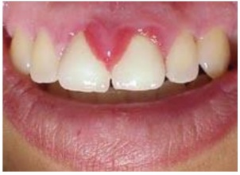

Questão 1 · Placenta · Útero e anexos · Sistema endócrino e metabolismo · 4000184803Pode-se afirmar que o hPL, também denominado somatomamotropina coriônica humana (hCS), tem atividade lactogênica e é produzido pelo:
A cório capsular
B sincíciotrofoblasto
C corpo lúteo
D âmnio fetal
Questão 2 · Modif icações f isiológicas da gestação · Obstetrícia · 4000184129Paciente de 24 semanas de gestação, em consulta de pré-natal refere problema na gengiva com presença de uma bola vermelha e dolorida. Relata frequente sangramento gengival ao escovar os dentes. Ao exame clínico, observa-se a seguinte imagem: Qual é a melhor conduta?

A Orientar higiene bucal.
B Solicitar biópsia.
C Encaminhar para exérese.
D Realizar cauterização.
Questão 3 · Sistema endócrino e metabolismo · Desenvolvimento f etal · 4000177204A respeito das doenças da tireoide e paratireoide na gestação, assinale a alternativa correta.
A O hipotireoidismo materno relaciona-se com risco aumentado de hipertensão gestacional, abortos e partos prematuros. Causas primárias de hipotireoidismo incluem uso de lítio, amiodarona e de dopamina.
B A tireoidite pós-parto é resultado de um processo de destruição autoimune da tireoide, podendo acometer aproximadamente quase 10% das mulheres no 1º ano pós-parto e caracteriza-se pela elevação do anticorpo antirreceptor de TSH (anti-TRAb).
C Como não há passagem de PTH materno pela placenta, o ambiente fetal se caracteriza por um estado fisiológico favorável à formação do esqueleto, com hipercalcemia, calcitonina elevada e PTH suprimido.
D Na gravidez normal, apesar de o cálcio sérico estar menor do que fora da gestação, a forma ionizada encontra- se normal. Esse equilíbrio é mantido em razão do aumento da secreção da calcitonina que ocorre na gestante.
Questão 4 · Fisiopatologia · Sistema endócrino e metabolismo · 4000177203Primípara de 24 anos, com idade gestacional calculada de 11 semanas e 1 dia, retorna à consulta de prénatal. Previamente hígida e sem quaisquer queixas, realizou, entre outros exames, uma glicemia de jejum com valor de 91 mg/dL. A respeito do caso, é correto afirmar que
A a gravidez é uma condição caracterizada por resistência à insulina, com aumento compensatório na resposta das células betapancreáticas e hiperinsulinismo. A resistência usualmente começa no segundo trimestre e progride durante toda a gestação.
B a secreção de hormônios placentários contrainsulínicos, como o cortisol e a prolactina, é maior do que a dos hormônios pró-insulínicos, como o lactogênio placentário humano (hPL).
C um teste de tolerância oral à glicose deverá ser realizado entre a 24ª e a 28ª semanas de gestação. Pelo menos um valor superior ou igual a 92, 183 ou 150 mg/dL, respectivamente no momento zero, uma e duas horas após a administração da glicose, determinam o diagnóstico de diabetes mellitus gestacional.
D para grávidas com diabetes mellitus gestacional, deve-se manter a glicemia pré-prandial, 1 hora pósprandial e 2 horas pós-prandial, respectivamente, até 90, 140 e 100 mg/dL.
Questão 5 · Modif icações f isiológicas da gestação · Obstetrícia · 4000173552Sobre o diagnóstico de gravidez, correlacione as colunas abaixo: I. Sinal de Puzos II. Sinal de Kluge III. Sinal de Jacquemier IV. Sinal de Osiander V. Sinal de Hunter ( ) Rechaço fetal intrauterino ( ) Coloração violácea da vagina ( ) Coloração violácea do meato urinário e da vulva ( ) Percepção do pulso da artéria vaginal ao toque vaginal ( ) Hiperpigmentação da aréola primária e aparecimento da aréola secundária Assinale a alternativa que indica a associação CORRETA.
A I-A; II-B; III-C; IV-D; V-E
B I-A; II-C; III-B; IV-E; V-D
C I-D; II-C; III-B; IV-A; V-E
D I-D; II-E; III-B; IV-A; V-C
E I-E; II-B; III-C; IV-D; V-A
Questão 6 · Modif icações f isiológicas da gestação · Obstetrícia · 4000173551Sobre as modi cações siológicas que ocorrem na mulher durante o período gravídico puerperal, assinale a alternativa CORRETA.
A O volume sanguíneo e plasmático, a frequência cardíaca e o débito cardíaco diminuem, enquanto a resistência vascular e a pressão sanguínea aumentam.
B As células brancas diminuem durante a gravidez, alcançando seu valor máximo no parto e puerpério.
C A capacidade respiratória total encontra-se reduzida, pois ocorre aumento da capacidade residual funcional, e, devido à hiperventilação causada pelo volume corrente, ocorre o aumento da pressão parcial de dióxido de carbono (pCO₂).
D A ação da progesterona sobre a vesícula biliar pode justificar a proteção de colelitíase na gravidez.
E A ativação do sistema renina angiotensina aldosterona causa reabsorção do sódio, diminuindo a da osmolaridade plasmática.
Questão 7 · Modif icações f isiológicas da gestação · Obstetrícia · 4000169562Em relação às modificações fisiológicas na gestação, analisar os itens abaixo: I. O útero apresenta um crescimento assimétrico durante a gestação, sendo mais pronunciado em sua região fúndica. II. O sinal de Hunter e os Tubérculos de Montgomery são alterações referentes às mamas. III. Durante a gestação, o trânsito intestinal encontra-se mais lento devido à ação do estrógeno. IV. O cloasma ocorre na face por estimulação dos melanócitos gerando hiperpigmentação e ocorre somente na gestação. Estão CORRETOS:
A Somente os itens I e II.
B Somente os itens I, II e III.
C Somente os itens III e IV.
D Todos os itens.
Questão 8 · Modif icações f isiológicas da gestação · Obstetrícia · 4000168910Na gravidez o organismo feminino sofre diversas modi cações siológicas para adaptação. São consideradas manifestações fisiológicas da gravidez:
A Redução da frequência cardíaca a partir da quarta semana de gestação.
B Ocorrência de hipovolemia induzida pela gestação no sentido de suprir as necessidades fetais e evitar perdas durante o parto.
C Discreto aumento, de 5 a 10 mmHg, na pressão sanguínea arterial sistólica, por volta da 20 semana com concomitante elevação do débito cardíaco.
D Ocorrência de aumento do número de hemácias, leve aumento do número de leucócitos e leve redução do número de plaquetas.
Questão 9 · Modif icações f isiológicas da gestação · Obstetrícia · 4000168663Sobre as alterações fisiológicas da gravidez, marque a alternativa incorreta:
A O eritema palmar predomina nas eminências tentares e hipotenares e tende a piorar com a evolução da gravidez;
B Com o intuito de corrigir seu eixo corporal, ocorre um aumento da lordose lombar, aumento da base de sustentação e consequentemente, espasmos da musculatura intervertebral;
C Do ponto de vista respiratório, nota-se um aumento da capacidade residual funcional, assim como da pCO2 arterial;
D A frequência cardíaca materna aumenta cerca de 10 a 15bpm, com o pico do débito cardíaco ocorrendo em torno de 24 semanas;
E O aumento da globulina carreadora de hormônios tireoidianos (TBG), leva a um aumento compensatório dos níveis de T3 e T4.
Questão 10 · Modif icações f isiológicas da gestação · Obstetrícia · 4000166882É comum a queixa de pirose durante a gestação. Este sintoma decorre da ação do aumento da pressão abdominal pelo útero gravídico, mas também pela ação do hormônio
A progesterona.
B estrogênio.
C ativina.
D B-hCG.
Questão 11 · Modif icações f isiológicas da gestação · Obstetrícia · 4000166881A passagem de imunoglobulina G (IgG) da mãe para o feto se dá através da placenta por
A difusão simples.
B difusão facilitada.
C endocitose.
D ultrafiltração.
Questão 12 · Modif icações f isiológicas da gestação · Obstetrícia · 4000166880A placenta é um órgão que produz vários hormônios que facultam um ambiente favorável para o desenvolvimento fetal intrauterino. No entanto, na produção dos esteroides sexuais, ela necessita da transformação da pregnenolona em sulfato de deidroepiandrosterona na glândula suprarrenal fetal, porque não possui a enzima
A desmolase.
B 21-hidroxilase.
C 17-
D 17-
Questão 13 · Modif icações f isiológicas da gestação · 4000164684Assinale a alternativa correta considerando as modificações fisiológicas na gestação.
A Existe uma maior excreção de sódio pela urina, em consequência do aumento da taxa de filtração glomerular.
B Os níveis plasmáticos de cálcio diminuem na gestação, devido à redução da sua absorção intestinal.
C As concentrações de lipoproteínas e de lipídeos totais diminuem no plasma materno, devido ao consumo fetal.
D A glândula tireoide reduz o seu volume, devido à ação progressiva do hCG, que possui molécula semelhante ao TSH.
E A adeno-hipófise reduz significativamente seu volume, devido à ação inibidora do hormônio antidiurético, responsável pela retenção hídrica tecidual
Questão 14 · Modif icações f isiológicas da gestação · 4000164082No contexto da pandemia de covid-19, surgem inúmeros desa os na assistência ao paciente grave. Há também um expressivo aumento dos casos críticos em gestantes, em que, além das questões com a condução de uma nova doença, é preciso inserir essa assistência no cenário de um organismo que passa por modi cações siológicas que podem ser importantes fatores de confusão. Dessa forma, durante a gestação, é correto afirmar que:
A o aumento da frequência respiratória e do volume tidal contribui para um aumento do volume residual e da capacidade residual funcional pulmonar
B há aumento dos fatores fibrinolíticos e manutenção dos fatores pró-coagulantes, levando a um maior risco de eventos hemorrágicos na gravidez
C no 3º trimestre, pode-se observar redução do enchimento cardíaco e do débito cardíaco em posição supina comparada ao decúbito lateral
D em função do maior esforço respiratório, observa-se um aumento da pCO2 com consequente acidose respiratória compensada
Questão 15 · Modif icações f isiológicas da gestação · 4000163713Gestante, de 29 anos, com 34 semanas de idade gestacional, comparece à emergência preocupada por achar estar com Covid-19, referindo adinamia, congestão nasal e dispneia leve, principalmente ao deitar. Seu exame mostrou saturação de oxigênio de 96% em ar ambiente, frequência respiratória de 23 irpm, temperatura axilar de 37,2 °C e ausculta pulmonar com murmúrios vesiculares diminuídos nas bases bilateralmente. Marque o item que contém sua hipótese diagnóstica e conduta.
A Síndrome gripal. Internamento hospitalar, monitorização e tratamento clínico até resultado de exames confirmatórios de Covid-19.
B Gestação fisiológica. Orientações a respeito de uso de máscara, distanciamento social e sintomas de alarme para doença respiratória.
C Síndrome gripal. Coleta de secreções respiratórias para PCR-RT de covid-19 e liberação para isolamento em domicílio usando oseltamivir.
D Síndrome respiratória aguda grave. Internamento para monitorização e interrupção da gestação por cesárea, após corticoide para maturação pulmonar.
Questão 16 · Modif icações f isiológicas da gestação · Obstetrícia · 4000163465A placenta tem inúmeras funções, promovendo as trocas materno-fetais, garantindo as trocas gasosas, permitindo o transporte de nutrientes e assegurando a produção local de hormônios e enzimas. Sobre o desenvolvimento placentário, é correto afirmar:
A O desenvolvimento dos vilos primários ocorre juntamente com a implantação do blastocisto, no sexto dia após a concepção.
B As células trofoblásticas da placenta de primeiro trimestre são altamente invasivas, estendendo-se pelo endométrio até o miométrio e são responsáveis pela formação da placenta hemocoriônica.
C O sistema de veias endometriais forma um plexo grosso com poucas anastomoses e fluxo de resistência elevado.
D O processo de invasão trofoblástico das artérias espraiadas torna a resistência nos vasos placentários alta.
E O transporte placentário ocorre exclusivamente por meio de difusão simples.
Questão 17 · Modif icações f isiológicas da gestação · Obstetrícia · 4000163464Em relação às adaptações do organismo materno na gestação, é correto afirmar:
A observa-se aumento volêmico mais discreto em pacientes que apresentam restrição de crescimento fetal e hipertensão arterial sistêmica.
B existe um aumento da maioria dos elementos figurados do sangue na gravidez, porém o número de leucócitos não se altera em uma gravidez normal.
C as adaptações cardiovasculares começam no terceiro trimestre de gestação.
D ocorrem alterações em toda a cascata de coagulação, marcadamente com o número de plaquetas que se encontra aumentado.
E ocorre uma queda na pressão arterial sistêmica, mais acentuada no terceiro trimestre de gestação.
Questão 18 · Sistema endócrino e metabolismo · 4000185181Em mulheres gra ma ̃ e, o feto e a placenta. Nesse contexto de normalidade, a gravidez e
A Pro
B Anti-inflamato
C Anti-inflamato
D Pro
Questão 19 · Sistema cardiovascular e hematopoiético · 4000185180Primigesta, 19 anos de idade, 23 semanas de gestação, comparece a consulta pré-natal com relato de episódios esporádicos de tontura, falta de ar e fadiga. Nega comorbidades. Traz laudo de eletrocardiograma realizado há três dias que revela: taquicardia, arritmia sinusal, extrassístoles e desvio de eixo elétrico para esquerda com alterações de repolarização. Nesse caso, o eletrocardiograma é sugestivo de:
A Wolf-Parkinson-White.
B Normalidade.
C Estenose mitral.
D Miocardiopatia hipertrófica.
Questão 20 · Modif icações f isiológicas da gestação · Obstetrícia · 4000146940As modi cações siológicas na gravidez e no ciclo puerperal são responsáveis por intensas alterações no cotidiano da mulher. Dentre os achados característicos dessa etapa, assinale a assertiva CORRETA.
A Após a dequitação, o útero se contrai intensamente tornando-se endurecido e globoso. Entre 24 e 48h, ao examinar a puérpera, o útero se encontra abaixo da sínfise púbica.
B Endurecimento na consistência do colo uterino, principalmente no terceiro trimestre, associado a um formato ovóide uterino.
C quanto à classificação dos lóquios, os que estão presentes a partir do 4º e 5º dia até o 10º dia, são os sanguinolentos (rubros; a cor avermelhada intensa e com coágulos é resultante de alterações de hemoglobina e aumento do número de hemácias.
D A pressão arterial materna volta aos níveis pré-gravídicos no segundo trimestre.
E A impedância vascular das artérias uterina reduz, quando comparado aos valores pré-gravídicos.
Questão 21 · Sistema urinário · 4000146696A gestação, embora não piore os distúrbios renais, intensi ca distúrbios não infecciosos renais quando coexistir hipertensão descontrolada. Quanto à insuficiência renal crônica, é CORRETO afirmar:
A Possui como causas mais comuns a obstrução urinária e a diabetes.
B Requer ultrassonografias seriadas para avaliar o crescimento do feto a cada 2 meses.
C Se leve, possui elevado risco de perda potencialmente irreversível da função renal.
D Requer estudos laboratoriais basais.
Revisar: possível letra faltando em enunciado
Questão 22 · Sistema urinário · 4000146685Distúrbios hídricos e eletrolíticos costumam ocorrer em mulheres com morbidade obstétrica ou que se submetem a uma cirurgia ginecológica de grande proporção. No tocante às suas peculiaridades, é CORRETO afirmar:
A O manejo da hipernatremia é geralmente direcionado para a reposição do volume com cristaloide.
B A hipernatremia se constitui na concentração sérica de sódio superior a 135 mEq/L e implica na deficiência relativa de água livre.
C A hipercalemia se constitui no nível de potássio sérico maior do que 5,0 mEq/L, não sendo fatal, além de ser causada, por exemplo, pela redistribuição celular associada à acidose.
D A hipercalcemia é definida como nível de cálcio sérico total acima de 10,5 mg/dL ou nível de cálcio sérico ionizado acima de 1,3 mmol/L e seus achados clínicos não são específicos.
Questão 23 · Placenta · Obstetrícia · 4000146341O evoluir da gestação mimetiza manifestações clínicas de doenças na decorrência das adaptações gravídicas do organismo materno, e as alterações hormonais são o reflexo disso. O transporte placentário de nutrientes para o feto é estimulado pela síntese placentária de vários hormônios. Assinale a alternativa que apresenta o hormônio principal desse processo.
A Estrogênio.
B Hormônio lactogênio placentário.
C Prolactina.
D Progesterona.
E Testosterona.
Questão 24 · Sistema cardiovascular e hematopoiético · Sistema respiratório · Sistema endócrino e metabolismo · 4000145924O organismo materno, a m de gestar de maneira siológica, vive inúmeras modi cações adaptativas. Essas alterações ocorrem tanto nos órgãos reprodutores quanto de forma sistêmica. A respeito das modi cações gravídicas, assinale a alternativa correta.
A No terceiro trimestre, há o decréscimo de 15% da frequência cardíaca, associado ao aumento de 45% a 50% do volume sanguíneo.
B Há o aumento da frequência respiratória, contudo o volume corrente e a ventilação por minuto em repouso se mantêm nos valores pré-gravídicos.
C O metabolismo lipídico materno apresenta uma fase anabólica no primeiro e no segundo trimestre e uma fase catabólica no terceiro trimestre.
D A taxa de filtração glomerular aumenta, porém, devido à ação progestagênica, há o aumento na creatinina plasmática.
E O consumo de glicose pelo feto é contínuo e a ingestão materna, intermitente. Para manter a fonte de energia fetal contínua, o transporte de glicose através da placenta ocorre por osmose.
Questão 25 · Útero e anexos · Sinais de probabilidade de gestação · 4000145821O sinal de probabilidade de gravidez que se caracteriza pelo amolecimento da região ístmica do útero ao toque combinado denomina-se sinal de:
A Hegar
B Piskacek
C Osiander
D Nobile-Budin
Questão 26 · Modif icações sistêmicas · 4000145820A consequência da retenção fisiológica de líquido na gravidez é:
A diminuição do débito cardíaco
B diminuição do fluxo plasmático renal
C aumento na concentração de albumina
D redução na concentração de hemoglobina
Questão 27 · Tratamento da anemia megaloblástica · Sistema cardiovascular e hematopoiético · 4000145508Gestante de 25 anos, primigesta, sem comorbidades, vem à Unidade Básica de Saúde com o seguinte resultado de hemograma: Hb 1 O, 1 g/dl; hematócrito 29%; hemácias 3.000.000/mm³ ; volume corpuscular média 104 /ml; hemoglobina corpuscular média 34,8pg; leucócitos total 9.500/mm3 ; presença de neutró los hiperssegmentados. Atualmente, com idade gestacional por US de primeiro trimestre de 18 semanas e em uso de sulfato ferroso pro lático desde 12 semanas. Diante deste resultado, assinale a CONDUTA MAIS ADEQUADA:
A Prescrição de ácido fólico por via oral e reavaliação do hemograma em 30 dias
B Prescrição de sulfato ferroso terapêutico e reavaliação do hemograma em 30 dias
C Prescrição de vitamina b12 por via intramuscular e reavaliação do hemograma em 15 dias
D Prescrição de vitamina b12 por via oral e reavaliação do hemograma em 15 dias
Questão 28 · Placenta · 4000144399A passagem de glicose da mãe para o feto através da placenta ocorre por um mecanismo de:
A Transporte ativo.
B Pinocitose.
C Difusão simples.
D Difusão facilitada.
Questão 29 · Placenta · 4000144397A placenta humana é do tipo:
A Discoidal.
B Deciduada.
C Alantocial.
D Hemocorial.
Questão 30 · Sistema cardiovascular e hematopoiético · 4000142436Julgue o item. O risco de trombose venosa e embolia pulmonar em mulheres saudáveis é considerado como mais elevado durante o ciclo gravidez/puerpério.
A Certo.
B Errado.
Questão 31 · Modif icações f isiológicas da gestação · 4000142435Julgue o item. A gravidez em si é uma condição que predispõe a ocorrência de pneumonia bacteriana em mulheres.
A Certo.
B Errado.
Questão 32 · Modif icações f isiológicas da gestação · 4000142432Julgue o item. Na gravidez, na maioria das vezes em que ocorre o edema pulmonar, a etiologia é não cardiogênica, sendo a pré-eclâmpsia uma das principais causas.
A Certo.
B Errado.
Questão 33 · Modif icações f isiológicas da gestação · 4000142428As adaptações anatômicas, siológicas e bioquímicas durante a gestação são profundas. Muitas dessas mudanças extraordinárias começam logo após a fecundação e continuam por toda a gestação, a maioria ocorrendo em resposta a estímulos siológicos a partir do feto e da placenta. A respeito das modi cações do organismo materno durante o ciclo gravídico, julgue o item. O débito cardíaco aumenta a partir do 2.º trimestre da gestação e re ete a redução na resistência vascular periférica e o aumento da frequência cardíaca.
A Certo.
B Errado.
Questão 34 · Modif icações f isiológicas da gestação · 4000142427As adaptações anatômicas, siológicas e bioquímicas durante a gestação são profundas. Muitas dessas mudanças extraordinárias começam logo após a fecundação e continuam por toda a gestação, a maioria ocorrendo em resposta a estímulos siológicos a partir do feto e da placenta. A respeito das modi cações do organismo materno durante o ciclo gravídico, julgue o item. É bem conhecida a hipervolemia associada à gravidez normal e, após trinta e duas a trinta e quatro semanas de gestação, o volume sanguíneo das gestantes é consideravelmente maior que o das não gestantes.
A Certo.
B Errado.
Questão 35 · Placenta · Obstetrícia · 4000140566Considere as afirmações abaixo sobre o sistema amniótico. I - O sistema amniótico é uma unidade morfofuncional constituída pelo conjunto das membranas ovulares (âmnio e cório) e o líquido amniótico. II - O âmnio contém nervos, fibras musculares lisas, vasos linfáticos e vasos sanguíneos. III - Com o evoluir da gestação, aumenta a participação fetal, enquanto diminui a contribuição materna na composição do líquido amniótico. IV - Entre as funções do líquido amniótico, não estão a contribuição para o desenvolvimento dos pulmões e o auxílio no controle da temperatura corporal do feto. Das afirmações, estão corretas
A II e IV.
B I e IV.
C II e III.
D I e III.
Questão 36 · Obstetrícia · Sistema endócrino e metabolismo · 4000140485Paciente de 22 anos procura atendimento por suspeita de gravidez. Tem ciclos menstruais regulares e não usa método contraceptivo. Refere relação sexual desprotegida e está com atraso menstrual de 3 dias. Se essa paciente estiver grávida no tempo previsto pela última menstruação, o sinal que deve ser encontrado, dentre os abaixo, é:
A Presença de linha nigra.
B Ausculta de batimentos fetais com sonar.
C Útero preenchendo o fundo de saco posterior.
D Coloração violácea da vulva.
E Aumento da sensibilidade mamária.
Questão 37 · Modif icações locais · Obstetrícia · Obstetrícia f isiológica · 4000139099O período gestacional da vida da mulher marca uma das fases mais transformadoras da siologia feminina. As transformações do organismo vão desde sinais e sintomas clínicos até alterações biopsicossociais. A respeito desse assunto e dos sinais e sintomas do diagnóstico de gravidez, julgue o item a seguir. O sinal de Puzos, que corresponde ao rechaço fetal intrauterino, é seguramente indicativo de gravidez, já que é um sinal mais tardio e aparece após o primeiro trimestre de gestação.
A Certo.
B Errado.
Questão 38 · Modif icações f isiológicas da gestação · Modif icações locais · Obstetrícia · 4000139098O período gestacional da vida da mulher marca uma das fases mais transformadoras da siologia feminina. As transformações do organismo vão desde sinais e sintomas clínicos até alterações biopsicossociais. A respeito desse assunto e dos sinais e sintomas do diagnóstico de gravidez, julgue o item a seguir. Presume-se gravidez caso, durante o exame físico, seja visualizado, na paciente, o sinal de Hunter se caracteriza pela presença de vasos que formam uma rede vascular na mama.
A Certo.
B Errado.
Questão 39 · Sistema cardiovascular e hematopoiético · 4000138683Quanto às adaptações do sistema cardiovascular materno à gravidez normal, é correto afirmar que ocorre o(a)
A aumento da volemia materna, decorrente, prioritariamente, do acréscimo de volume plasmático.
B aumento da resistência vascular periférica, com consequente aumento da pressão arterial sistêmica materna.
C aumento da produção de prostaciclinas, o que ocasiona vasoconstrição sistêmica materna.
D variação do volume sanguíneo materno, associada à quantidade de tecido trofoblástico, sendo menor nas gestações múltiplas.
E diminuição da frequência cardíaca basal e do débito cardíaco materno.
Questão 40 · Útero e anexos · 4000138681Uma mulher de 24 anos de idade foi ao pronto-socorro no dia 7 de outubro de 2020, referindo última menstruação em 29 de julho de 2020 e queixando-se de polaciúria intensa. Com base nesse caso hipotético, assinale a alternativa que apresenta o sinal que, ao exame de toque vaginal, pode ser encontrado.
A sinal de Hegar
B sinal de Pinard
C sinal de McRoberts
D sinal de Haller
E sinal de Mauriceau
Questão 41 · Modif icações sistêmicas · 4000132853As adaptações anatômicas, fisiológicas e bioquímicas durante a gestação são profundas. Sobre essas mudanças, é correto afirmar:
A A hipervolemia na gravidez se acentua no terceiro trimestre, sendo adicionado mais eritrócitos do que plasma.
B Durante a gravidez normal, reduzem-se a pressão arterial média e a resistência vascular e aumentam a volemia e a taxa de metabolismo basal.
C Apesar das alterações renais, os parâmetros dos exames de urina e teste de função renal ficam próximos dos da não grávida.
D A produção dos hormônios da tireoide sofre um pequeno aumento, principalmente no terceiro trimestre.
Questão 42 · Sistema urinário · 4000132453Sobre as alterações fisiológicas que ocorrem no trato urinário durante a gestação, é correto afirmar que:
A Existe um aumento do tônus da musculatura lisa dos ureteres e bexiga, o que leva ao aumento de infecções urinárias e ao aumento da frequência urinária na gestação.
B A creatinina plasmática encontra-se em valores menores que na não gestante, por aumento na taxa de filtração glomerular.
C Ocorre um aumento da taxa de filtração glomerular, com aumento na reabsorção de glicose.
D A dilatação da pelve renal e dos ureteres é causada pela compressão do útero e melhora imediatamente após o parto.
Questão 43 · Modif icações f isiológicas da gestação · 4000130998A progesterona é hormônio importante na gestação. Sobre ela é correto afirmar:
A Inibe o crescimento das glândulas mamárias.
B Inibe a lactogênese durante a gestação.
C Diminui a ventilação pulmonar materna.
D Diminui a excreção tubular de sódio.
Questão 44 · Modif icações f isiológicas da gestação · 4000130994As modi cações siológicas na gravidez podem trazer repercussões clínicas importantes para a gestante. Assinale a alternativa correta:
A O débito cardíaco aumenta mais no segundo estágio do trabalho de parto e após o parto, levando mulheres cardiopatas à tendência maior de complicações como edema agudo de pulmão nesses períodos.
B A contagem de leucócitos é normalmente mais alta que fora da gestação, mas níveis acima de 20.000/mm³, mesmo no puerpério, são considerados patológicos.
C Existe aumento do consumo de O2 na gestação e para compensação há aumento da capacidade residual funcional em torno de 25%.
D Mulheres com adenomas de hipófise tendem a ter melhora do quadro clínico pois esses tumores tendem à regressão.
Questão 45 · Sistema cardiovascular e hematopoiético · 4000129646São exemplos de modificações no sistema de coagulação materna durante a gestação:
A aumento da proteína S Livre e diminuição da proteína C.
B aumento do fator de Von Willebrand e diminuição do Fator II.
C aumento do fibrinogênio e do fator de Von Willebrand.
D diminuição dos fatores VIII e antitrombina III.
Questão 46 · Pneumologia · Sistema respiratório · 4000129393Em relação às modificações fisiológicas da gestação no sistema respiratório, podemos dizer que:
A Ocorre hipoventilação fisiológica.
B A capacidade pulmonar total não se altera.
C O volume corrente e o volume-minuto diminuem.
D O volume residual diminui.
Questão 47 · Útero e anexos · 4000084344O sinal de Nobile-Budin, corresponde a um diagnóstico de presunção de gravidez e consiste no seguinte achado ao exame físico:
A útero de forma globosa ao toque combinado
B sensação de pulsação no fundo de saco posterior
C formato assimétrico do útero ao toque combinado
D amolecimento pronunciado do istmo do útero
Questão 48 · Útero e anexos · 4000083578Paciente feminina, 18 anos, procura atendimento ginecológico ambulatorial devido a quadro de amenorreia há 4 meses. História de ciclos menstruais irregulares desde a menarca; nega uso de método contraceptivo. Durante o exame ginecológico, foi identificado o Sinal de Puzos, que consiste em:
A Rechaço fetal intrauterino
B Amolecimento do istmo
C Aumento da circulação venosa das mamas
D Coloração violácea da vulva
Questão 49 · Placenta · 4000076300A placenta humana é considerada um órgão incompleto em relação à elaboração de esteroides sendo incapaz de converter pregnolona e progesterona em androgênios, precursores dos estrogênios. Pode-se a rmar que, para tal conversão, seria necessária a presença de:
A adenilatociclase
B 16 alfa hidroxidesidroepiandrosterona
C 17 alfa hidroxilase
D alfa galactosidade
Questão 50 · Modif icações locais · Sinais de probabilidade de gestação · 4000073196Consideramos sinais de probabilidade de gravidez, EXCETO:
A Nobile-Budin.
B Kluge.
C Osiander.
D Hegar.
E Puzos.
Questão 51 · Modif icações locais · Pele e anexos · 4000070049Durante a gestação, podemos afirmar sobre o exame físico materno:
A O aparecimento de coloração violácea da vulva (vestíbulo e meato uretral é o sinal de Jaquemier- Chadwick.
B O sinal de Hunter é o aumento das mamas que torna o limite das aréolas mais nítido e preciso.
C Sinal de Goodell é o endurecimento do colo uterino percebido ao toque vaginal.
D Sinal de Nobile-Budin é o amolecimento da região ístmica uterina.
E Sinal de Piscacek consiste na dor à mobilização do colo uterino e abaulamento e dor no fundo de saco de Douglas.
Questão 52 · Modif icações f isiológicas da gestação · Modif icações sistêmicas · Obstetrícia · 4000036136Em relação às alterações fisiológicas na gravidez, é correto afirmar:
A O colesterol total e os triglicérides têm elevação discreta.
B Ocorre um aumento dos níveis da globulina ligadora de tiroxina (TBG) por estímulo da progesterona.
C Mesmo com o aumento da circunferência torácica, ocorre a redução do volume residual de ar nos pulmões.
D Ocorre uma diminuição do fluxo renal plasmático e da taxa de filtração glomerular, predispondo às infecções urinárias.
Questão 53 · Sistema digestório · 4000024144Uma gestante de 26 anos de idade, IG de nove semanas, G2P1A0, retorna à UBS para consulta de pré-natal. Apresenta queixa de azia, constipação e desconforto esporádico em quadrante superior direito do abdome. Ao exame físico, apresenta bom estado geral, abdome indolor, útero impalpável e BCF inaudíveis, Frequência cardíaca = 90 bpm, frequência respiratória = 17 ipm, SatO₂ = 98% em ar ambiente. Leva calendário vacinal com esquema completo para hepatite B e três doses da dupla adulto (dT), realizadas na última gestação, há três anos. Entre os exames complementares, destacam-se os seguintes resultados: EQU sem particularidades; e urocultura - crescimento de Streptococcus do grupo B > 100.000 UFC/mL. Acerca desse caso clínico e com base nos conhecimentos médicos correlatos, julgue o item a seguir. Acredita-se que a lenti cação do trânsito intestinal e do esvaziamento gástrico, que podem levar a sintomas como os descritos pela paciente, esteja, relacionados aos descritos pela paciente, estejam relacionados aos níveis de progesterona no período gestacional.
A Certo.
B Errado.
Questão 54 · Sistema cardiovascular e hematopoiético · 4000019367Primigesta de 28 anos, com gestação única no curso da 30a semana. Comparece a consulta de pré-natal, referindo dispneia leve que a acompanha desde o início da gestação. Nas últimas semanas, apresentou piora do quadro respiratório, tendo inclusive náuseas e sudorese fria ao assumir a posição de decúbito dorsal. Além disso, refere edema de membros inferiores que piora ao longo do dia. A paciente está preocupada porque sua pressão arterial aumentou de 105x60 mmHg na primeira consulta para 120x80 mmHg na consulta de hoje. Qual a principal hipótese para essa paciente?
A Pré-eclâmpsia.
B Doença cardíaca valvar.
C Tromboembolismo pulmonar.
D Alterações fisiológicas da gestação.
Questão 55 · Pele e anexos · 4000125620São alterações dermatológicas fisiológicas do organismo materno, EXCETO:
A Cloasma, hiperpigmentação na face.
B Aparecimento de varizes vulvares e telangiectasias.
C Crescimento de pelos faciais, lanugem.
D Eritema palmar, no vestíbulo a na vagina.
E Aparecimento de tubérculos de Morgagni.
Questão 56 · Lactogênio placentário · Sistema endócrino e metabolismo · 4000116888Hormônio lactogênio placentário, durante a gravidez, é responsável por um efeito:
A Diurético
B Alérgico.
C Estimulante do apetite.
D Diabetogênico.
E Todas as anteriores.
Questão 57 · Sistema cardiovascular e hematopoiético · 4000116885Está aumentado na gravidez:
A Fibrinogênio.
B Hematócrito
C Albumina sérica.
D Plaquetas
E Todas as anteriores.
Questão 58 · Vulva e vagina · 4000116884Coloração azul da parede anterior da vagina abaixo do meato ureteral e atrás dos restos himenais:
A Osiander
B Jacquemier Chadwick.
C Piskacek.
D Nobile-Budin.
E Klaus.
Questão 59 · Sistema cardiovascular e hematopoiético · Útero e anexos · Sistema endócrino e metabolismo · 4000116113Assinale a única alternativa que está INCORRETA, quando consideramos as modi cações que a gestação provoca no corpo da mulher.
A Em gestantes clinicamente saudáveis, a pressão arterial diminui até a metade da gravidez e, então, aumenta até valores similares a antes da gestação.
B Há dilatação do sistema coletor urinário por compressão extrínseca pelo útero gravídico e pelo complexo vascular ovariano dilatado ao nível do infundíbulo pélvico.
C No período gravídico-puerperal, a adenohipófise aumenta o seu volume pela hipertrofia das células lactotróficas em decorrência da apojadura e início da lactação.
D O crescimento do útero gravídico causa protrusão abdominal que desloca o centro de gravidade que, em conjunto com o afrouxamento dos ligamentos, leva à lordose exagerada.
Questão 60 · Sistema respiratório · 4000115387Na grávida a termo, pode-se afirmar que:
A O volume corrente não se altera
B A capacidade residual funcional é diminuída
C As alterações da capacidade residual funcional e do volume-minuto tornam mais segura a anestesia
D O volume-minuto está diminuído
E O volume de reserva expiratório está deminuído
Questão 61 · Útero e anexos · 4000114000Assinale a opção correta quanto à contratilidade uterina:
A Tríplice gradiente descendente está presente durante o transcurso de todo o período gestacional.
B Durante as contrações uterinas há diminuição significativa do retorno venoso, provocando hipotensão materna.
C Decúbito lateral esquerdo não modifica as características da contratilidade uterina.
D Número de receptores de ocitocina aumenta à medida que a gravidez se aproxima do termo.
E Nenhuma das anteriores
Questão 62 · Lactogênio placentário · Sistema endócrino e metabolismo · 4000106724Qual o componente hormonal responsável pela tendência diabetogênica verificada durante o período de gestação:
A HCG
B HPL
C TSH
D FSH
Questão 63 · Sistema cardiovascular e hematopoiético · 4000096996São alterações fisiológicas da gravidez: I. Aumento do débito cardíaco materno. II. Aumento do volume sanguíneo materno (especialmente 30-32 sem, à custa do volume plasmático). III. Diminuição da frequência cardíaca. IV. Diminuição da resistência periférica. Estão CORRETAS as assertivas:
A I e II, apenas.
B I e III, apenas.
C I, II e IV, apenas.
D II e III, apenas.
Questão 64 · Vulva e vagina · Útero e anexos · 4000091907Durante a gestação, podemos afirmar sobre o exame físico materno:
A O aparecimento de coloração violácea da vulva (vestíbulo e meato uretral) é o sinal de Jaquemier-Chadwick.
B O sinal de Hunter é o aumento das mamas que torna o limite das aréolas mais nítido e preciso.
C Sinal de Goodell é o endurecimento do colo uterino percebido ao toque vaginal.
D Sinal de Nobile-Budin é o amolecimento da região ístmica uterina.
E Sinal de Piscacek consiste na dor à mobilização do colo uterino e abaulamento e dor no fundo de saco de Douglas.
Questão 65 · Modif icações f isiologicas do puerpério · Sistema cardiovascular e hematopoiético · 4000085756Em uma gestante de baixo risco, a frequência e o débito cardíaco mantêm-se elevados por 24 a 48h após o parto. Estes parâmetros hemodinâmicos retornam aos valores pré-gravídicos por volta do:
A 7º dia.
B 10º dia.
C 15º dia.
D 21º dia.
Questão 66 · Modif icações locais · Sinais de probabilidade de gestação · 4000081460O diagnóstico precoce da gestação é fundamental para uma assistência pré-natal de qualidade e, alguns sinais e sintomas nos fornecem dados que nos auxiliam nesse diagnóstico. São considerados sinais de probabilidade de gestação, exceto:
A Alterações em formato e consistência do útero.
B Consistência cervical amolecida.
C Aumento do volume abdominal.
D Surgimento dos tubérculos de Montgomery.
Questão 67 · Pele e anexos · 4000081010A anamnese e o exame físico constituem a premissa do bom atendimento médico. A formação de lanugem consequente à intensificação da nutrição dos folículos pilosos é indicativo de:
A sinal de Halban
B cloasma
C sinal de Hunter
D linha nigra
Questão 68 · Sistema cardiovascular e hematopoiético · 4000033177Durante a gravidez ocorrem alterações siológicas em praticamente todos os sistemas. Ao se avaliar uma paciente grávida com possível indicação cirúrgica, qual das situações abaixo está INCORRETA:
A Ocorre redução da resistência vascular sistêmica, da pressão arterial sistólica e da pressão diastólica principalmente na metade da gestação.
B No final da gravidez o fluxo sanguíneo pode variar significativamente de acordo com a posição adotada pela paciente.
C O aumento fisiológico da volemia sanguínea faz com que sinais de hipovolemia sejam detectados precocemente.
D Sinais clínicos de insuficiência cardíaca como terceira bulha, sopro sistólico de ejeção e edema de membros inferiores são comuns em pacientes grávidas saudáveis.
Questão 69 · Sistema cardiovascular e hematopoiético · 4000120274Durante consulta de pré-natal, primigesta apresenta resultado de hemoglobina de 11 g/dl. Está usando 40mg de ferro elementar ao dia. O médico deverá
A Aumentar a dose para 400mg de ferro elementar ao dia para corrigir a anemia.
B Concluir que se trata de hemodiluição normal da gestação, mantendo a dose de suplementação de ferro.
C Introduzir ácido fólico em dose supra-fisiológica (15µg ao dia).
D Orientar alimentação e a tomada do ferro com derivados lácteos para aumento da absorção.
Questão 70 · Modif icações sistêmicas · 4000109959Em relação às alterações fisiológicas ocorridas para adaptação do organismo materno à gestação, assinale a incorreta:
A A alteração respiratória mais importante é a hiperventilação à custa do aumento do volume-corrente.
B O hidroureter e a hidronefrose fisiológicos se desenvolvem durante a gestação, principalmente à esquerda, determinando estase urinária que predispõe à infecção.
C O consumo de oxigênio na gravidez aumenta cerca de 15-20% para fazer jus ao acréscimo nas necessidades metabólicas.
D A gravidez é estado de hipercoagulabilidade e está associada a risco elevado de doença tromboembólica.
E A filtração glomerular renal e o fluxo plasmático renal aumentam acentuadamente durante a prenhez, determinando redução nos níveis sanguíneos de ureia e de creatinina e a presença de glicose na urina (glicosúria fisiológica).
Questão 71 · Útero e anexos · Queixas mais comuns na gestação · 4000099620Paciente chega à UBS referindo atraso menstrual de 5 semanas, com queixa de dor em baixo ventre; traz uma ultrassonogra a mostrando uma imagem que corresponde à um saco gestacional que mede 15mm. Qual a conduta apropriada para esse caso:
A repetir a ultrassonografia em 1 semana para avaliar o desenvolvimento da gestação
B encaminhar paciente ao PS para realização de curetagem uterina
C orientar paciente que ela não está grávida
D conduta expectante até eliminação completa
Questão 72 · Sistema urinário · 4000096374Das alterações do sistema urinário na gestante, aquele que NÃO corresponde à realidade é
A aumento da taxa de filtração glomerular.
B aumento da ureia e creatinina séricas.
C glicosúria fisiológica.
D compressão ureteral pelo útero gravídico.
Questão 73 · Modif icações locais · 4000078842Mulher, 22 anos, apresenta amenorreia, congestão mamária e náuseas há oito semanas. Toque vaginal: útero de aspecto assimétrico com sensação tátil de abaulamento e amolecimento no local e presença de sulco separando as duas regiões. Essa alteração no formato uterino constitui o sinal clínico de:
A Hegar.
B Piskacek.
C Nobile-Budin.
D Jacquemier.
Questão 74 · Modif icações locais · Sinais de certeza de gestação · 4000077834O diagnóstico clínico de certeza de gravidez pode ser realizado através da identificação do sinal de:
A Piskacek
B Hegar
C Puzos
D Osiander
E Chadwick.
Questão 75 · Sistema endócrino e metabolismo · 4000033566K.L.M, 28 anos, sexo feminino, que se encontra na 23ª semana de gestação, apresentou dor abdominal de forte intensidade, mais precisamente em fossa ilíaca direita, seguida de náuseas e vômitos. O plantonista que a atendeu solicitou alguns exames, pensando em provável tratamento operatório. Ao exame físico, na interpretação dos exames complementares e na condução do caso, deve-se levar em consideração algumas alterações que são próprias da gravidez. Entre as opções abaixo, assinale aquela que apresenta o item que se encontra REDUZIDO durante a gestação:
A Atividade da colinesterase plasmática.
B Contagem de leucócitos.
C Concentração plasmática de fibrinogênio.
D Frequência respiratória.
Questão 76 · Sistema endócrino e metabolismo · 4000022655A glicose atravessa a barreira placentária por
A transporte ativo.
B difusão facilitada.
C difusão simples.
D fagocitose.
Questão 77 · Sistema endócrino e metabolismo · 4000119719Uma das funções da progesterona placentária produzida durante a gestação é:
A Alterar as vilosidades coriônicas e produção de catepsina, aumentando as chances de implantação da gestação.
B Induzir a contratilidade miometrial fundamental para minimizar o risco de sangramento durante a implantação placentária.
C Aumentar a lactogênese por meio de estímulo aos receptores de prolactina nas mamas.
D Aumentar a contratilidade da vias urinárias, digestórias e biliares para aumento da função desses sistemas.
Questão 78 · Modif icações sistêmicas · 4000112746Assinale a alternativa CORRETA em relação às modificações gravídicas sistêmicas:
A A pressão arterial materna decresce no início da gravidez, sendo que a pressão arterial média e a pressão arterial diastólica terão seu nadir entre 16 a 20 semanas.
B A ventilação/minuto menor determina elevação da PaCO2 e PaO2, o que contribui para a acidose respiratória moderada, facilitando a troca gasosa placentária.
C A gravidez é um estado de hipocoagulabilidade, pois há queda na maior parte dos fatores de coagulação e incremento do sistema fibrinolítico.
D A elevação da ureia nitrogenada e da creatinina acontece porque a gestante experimenta redução da taxa de filtração glomerular.
Questão 79 · Útero e anexos · 4000111134Na gestação, é chamado sinal de Hegar:
A amolecimento do istmo cervical.
B rede venosa visivel nas mamas.
C mancha hipercrômica na face.
D hiperpigmentação da vulva e vagina.
E sangramento da nidação.
Questão 80 · Pele e anexos · 4000105833Qual dos seguintes sinais presentes no exame físico NÃO está associado à gravidez?
A Sinal de Halban.
B Sinal de Hunter.
C Sinal de Lapinsky.
D Tubérculos de Montgomery.
E Rede de Haller.
Questão 81 · Útero e anexos · Sistema urinário · 4000100665Durante o pré-natal, são frequentes as queixas decorrentes das modi cações relacionadas ao aumento da progesterona. Em relação a este hormônio, é CORRETO afirmar que ele determina:
A Aumento da frequência cardíaca e diminuição do trânsito intestinal.
B Polaciúria e aumento do débito cardíaco.
C Contrações de Braxton Hicks e diminuição do trânsito intestinal.
D Diminuição do peristaltismo do ureter e relaxamento miométrio.
Questão 82 · Placenta · 4000086607O cório placentário que tem as suas porções em correspondência com a decídua basal, mais vascularizadas e diretamente conectadas com o embrião pela circulação alantocorial, é o:
A Frondoso.
B Basal.
C Placentário.
D Decidual.
Questão 83 · Modif icações sistêmicas · 4000073030Mulher de 28 anos, primigesta, está realizando acompanhamento pré-natal em unidade de saúde da família com gestação de baixo risco. Apresenta várias dúvidas em função de modi cações que nota em seu organismo e que seus familiares dizem ser "devido à gravidez". Nesse cenário, o médico tem papel importante em conhecer as modi cações siológicas da gestação e distingui-las dos estados patológicos. Entre as modi cações ocorridas no organismo materno, é CORRETO citar:
A Diminuição do hematócrito e da concentração de hemoglobina por queda na produção de eritrócitos.
B Aumento do débito cardíaco e diminuição da resistência vascular periférica.
C Diminuição da concentração de fibrinogênio e da contagem de plaquetas.
D Aumento do peristaltismo esofagiano, levando a náuseas e vômitos.
Questão 84 · Útero e anexos · Sinais de probabilidade de gestação · 4000070244Em relação ao diagnóstico clínico de gravidez, o útero torna-se mais amolecido. Assinale em a alternativa em que esta característica é mais evidente:
A No fundo uterino.
B No colo.
C No corpo e no colo.
D Entre o corpo e o colo.
Questão 85 · Placenta · Desenvolvimento f etal · 4000044596Gestante, no curso da 9ª semana de gravidez, apresenta febre, útero doloroso à mobilização, colo uterino semipérvio com saída de conteúdo purulento, feto vivo. Na gravidez a termo, o peso da placenta representa quanto do peso do feto?
A 2/3.
B ½.
C 1/3.
D ¼.
E 1/6.
Questão 86 · Sistema cardiovascular e hematopoiético · Alterações na gestação · Cirurgia · 4000005534As mudanças siológicas e anatômicas que ocorrem na gestação podem in uenciar a avaliação da gestante traumatizada, alterando sinais e sintomas das lesões. Assinale a alternativa que contém as alterações esperadas na gestação.
A Aumento da pressão arterial, aumento da frequência cardíaca e aumento do débito cardíaco.
B Diminuição da frequência cardíaca, diminuição da pressão arterial e eixo eletrocardiográfico desviado para a esquerda.
C Aumento do débito cardíaco, aumento da frequência cardíaca e diminuição da pressão arterial.
D Diminuição da pressão arterial, aumento do débito cardíaco, eixo eletrocardiográfico desviado para a direita.
Questão 87 · Modif icações locais · 4000003217Dos sinais abaixo, qual o que não guarda relação com a forma uterina ao toque vaginal, como propedêutica do diagnóstico da gravidez?
A Sinal de Hegar.
B Sinal de Goodell.
C Sinal de Piscacek.
D Sinal de Nobile-Budim.
E Sinal de Kluge-Jacqemier.
Questão 88 · Modif icações sistêmicas · 4000122171Primigesta, 16 anos, vem para a primeira consulta pré-natal após teste de gravidez urinário positivo, com atraso de 11 semanas. Queixa-se de náuseas, tontura, cansaço e sonolência durante o dia e dor nas mamas. Refere palpitações eventuais e, ultimamente, sente-se com constipação intestinal. Sem comorbidades, nega alergias. Exame físico: bom estado geral, PA = 90 x 60 mmHg; FC = 104 bpm; FR = 22 irpm; T = 36,7ºC. Semiologia pulmonar sem alterações. Semiologia cardiológica com presença de sopro sistólico +/4+ multifocal e desdobramento da primeira bulha cardíaca. Abdome ácido, RHA+, sem alterações, indolor, útero não palpável. Exame ginecológico sem alterações. Em relação às queixas e achados de exame físico desta paciente, é CORRETO afirmar que:
A A presença de sopro cardíaco pode ser um achado fisiológico na gestante, porém omais frequente é a presença de sopro diastólico.
B Na gestação, há um aumento fisiológico do débito cardíaco e da frequência cardíacamaternas. A gestante também pode apresentar uma “dispneia fisiológica” devido ao aumento do volume corrente.
C Mastalgia é uma queixa incomum em gestantes em período inicial da gestação.
D Constipação é frequente em gestantes, está associada aos níveis hormonais de beta-hCG e tende a melhorar com a evolução da gestação.
E A pressão arterial tende a cair no primeiro trimestre de gestação, mantendo-se emníveis mais baixos durante toda a gestação. Isso se deve ao fenômeno de vasoconstrição na gestação.
Questão 89 · Modif icações sistêmicas · 4000110025Para que haja o desenvolvimento do concepto, cuidados com a nutrição, a parturição até o retorno às condições não gravídicas da mulher são importantes; diversas alterações no organismo da paciente acontecem desde a concepção até o puerpério. Em relação ao tema, NÃO é correto afirmar que:
A O volume plasmático aumenta mais do que o eritrocitário.
B Na metade inicial da gestação ocorre a fase catabólica no organismo materno.
C A produção ovariana de progesterona se dá no corpo lúteo até a 7ª semana de gestação.
D O aumento na lipogênese, na glicogênese hepática e na transferência de glicose para o feto provoca na gestante a redução da glicemia basal e de jejum.
E O hormônio de crescimento está reduzido durante a gravidez, principalmente após 24 semanas.
Questão 90 · As mamas · Modif icações sistêmicas · 4000109747Nos períodos gestacional e puerperal há mudanças fisiológicas na mama. E, em relação ao tema, é CORRETO afirmar que:
A Altos níveis de esteroides promovem a fase secretória exagerada.
B Os ductos mamários proliferam a partir da terceira semana.
C A somatomamotrofina placentária tem ação antagônica à da prolactina hipofisária.
D A remoção regular do leite altera o reflexo neural e inibe a lactação.
E com aumento da prolactina no primeiro trimestre ocorre o aumento da sua vascularização mamária, favorecendo a lactogênese.
Questão 91 · Diabetes na gestação DMG · 4000030207O diabetes é uma das doenças mais encontradas em gestantes. É diagnosticado em 1 a 14% das grávidas, variando de acordo com a etnia e o método de diagnóstico utilizado. Em relação a esta doença, tem-se o seguinte:
A o diagnóstico de Diabetes Mellitus Gestacional é realizado por meio da glicemia em jejum e TOT 75 g em 3 amostras (jejum, 60 minutos e 120 minutos).
B a gestação é caracterizada por diminuição da resistência periférica à ação da insulina e incremento na produção de insulina pelas células beta-pancreáticas.
C o metabolismo energético na gestação tem duas fases maternas bem distintas; a primeira é catabólica, do início até a 24ª semana e a segunda é anabólica, da 24ª semana até o final da gestação.
D a macrossomia não é um importante fator de morte fetal intraútero.
Questão 92 · Sistema digestório · 4000126528Uma paciente de 24 anos, solteira, primigesta, comparece à Unidade Básica de Saúde para sua primeira consulta de pré- natal. O tempo de amenorreia é de 14 semanas. Queixa-se de náuseas e vômitos frequentes, principalmente no período de manhã. Refere que os sintomas vêm piorando desde que soube estar grávida. O exame físico geral está normal e o exame obstétrico é compatível com os de uma gestação de 14 semanas. As náuseas e os vômitos na forma descrita pela paciente
A constituem sintomas precoce de gravidez múltipla, de modo que a principal medida no momento é aguardar o resultado da ultrassonografia para verificar gemelaridade.
B são sinais de alerta para problemas como a neoplasia trofoblástica gestacional, sendo recomendada a utilização de antieméticos e monitorização dos níveis de gonadotrofina coriônica.
C ocorrem em razão do aumento do volume uterino e os sintomas são progressivos na gestação. Deve-se evitar alimentos no período da manhã e recomendar repouso após as refeições.
D constituem manifestações frequentes no início da gravidez, que se dá em razão de alterações hormonais, de forma que os sintomas reduzirão com o tempo. A alimentação deve ser em pequenas quantidades e várias vezes ao dia.
Questão 93 · Sistema cardiovascular e hematopoiético · 4000122410No sistema cardiocirculatório da gestante, ocorrem as seguintes mudanças:
A Aumento do volume sanguíneo acompanhando proporcionalmente do aumento da celularidade vermelha, levando ao estado de hemodiluição ou anemia fisiológica da gestação.
B Diminuição da resistência vascular e aumento da frequência cardíaca, levando a aumento dos níveis pressóricos
C Diminuição do débito cardíaco, inicialmente à custa do volume sistólico e, após a segunda metade da gestação, à custa do aumento da frequência cardíaca.
D Queda da pressão sanguínea à custa da diminuição da resistência periférica e pela adição de um circuito de baixa pressão através da circulação uteroplacentária.
E Aumento do débito cardíaco, inicialmente à custa do volume sistólico e, após a segunda metade da gestação, diminuição do débito cardíaco à custa do aumento da frequência cardíaca
Questão 94 · Vulva e vagina · Útero e anexos · 4000110529Associe os sinais gravídicos com sua definição clínica. A seguir, assinale a alternativa que contém apenas associações CORRETAS: SINAIS: I. Sinal de Hegar; II. Sinal de Osiander; III. Sinal de Puzos; IV. Sinal de Kluge. DEFINIÇÕES: A. Percepção do pulso vaginal nos fundos de saco; B. Coloração violácea da mucosa vaginal; C. Útero de consistência cística, elástico-pastosa, principalmente no istmo; D. Rechaço fetal intrauterino, que se obtém impulsionando o feto com os dedos dispostos no fundo de saco anterior.
A I - A; II - B; III - D; IV - C.
B I - A; II - D; III - B; IV - C.
C I - C; II - A; III - D; IV - B.
D I - D; II - C; III - A; IV - B.
Questão 95 · Modif icações sistêmicas · 4000105194São algumas das alterações fisiológicas na gestação, EXCETO:
A aumento dos níveis de insulina.
B aumento da taxa metabólica basal.
C leucocitose.
D cardiomegalia.
E aumento do volume da tireoide.
Questão 96 · Rotura uterina · 4000105131Sinal característico da distensão do segmento uterino em um parto obstruído, com iminência de rotura uterina, é:
A Haegar.
B Hastings.
C Frommer.
D Bandl-Frommel.
E Simpsom.
Questão 97 · Modif icações sistêmicas · 4000104905Constituem modificações gravídicas gerais do organismo materno:
A Aumento do volume de reserva expiratória e da frequência respiratória.
B Aumento do tempo de esvaziamento gástrico e hipoatividade da vesícula biliar.
C Hipermotilidade do trato urinário e polaciúria.
D Hemodiluição e diminuição da concentração de fibrinogênio sanguíneo.
Questão 98 · Sistema digestório · Queixas mais comuns na gestação · 4000126989Em consulta de rotina, uma primigesta com 11 semanas de gestação queixa-se de fraqueza, alteração do apetite, além de náuseas e vômitos diários principalmente após as refeições. A gestante demonstra preocupação sobre o quadro clínico, com receio de interferência no desenvolvimento da gravidez. Na abordagem terapêutica dessa intercorrência no pré-natal, deve-se orientar a gestante a:
A diminuir a frequência das refeições ao longo do dia.
B realizar períodos de repouso, logo após as principais refeições.
C priorizar alimentos gordurosos para elevação do aporte calórico.
D evitar líquidos durante as refeições, dando preferência à sua ingestão nos intervalos das refeições.
Questão 99 · Modif icações locais · Diagnóstico clínico · 4000077741Jovem, 25 anos, chega à admissão de maternidade referindo amenorreia há 8 semanas. Refere que os ciclos menstruais são regulares e que não estava fazendo uso de nenhum método anticoncepcional. Exame físico: útero globoso ao toque vaginal e com o dedo encontram-se os fundos de saco ocupados pelo corpo uterino. Com estas características, estamos diante do seguinte sinal de gravidez:
A Certeza, sinal de Hegar.
B Presunção, sinal de Piskacek.
C Probabilidade, sinal de Nobile-Budin.
D Confirmação, sinal de Puzos.
Questão 100 · Sistema cardiovascular e hematopoiético · Sistema urinário · 4000127038Em relação às modi cações sistêmicas no organismo materno encontradas na gravidez com evolução normal, analise as afirmativas abaixo. I - Ocorre aumento da taxa de filtração glomerular. II - O volume plasmático encontra-se aumentado. III - A viscosidade plasmática encontra-se diminuída. IV - Ocorre aumento absoluto do volume eritrocitário. Está correto o que se afirma em: Respostas: 1 12 23 34 45 56 67 78 89 100
A I, II e IV, apenas.
B III, apenas.
C II, apenas.
D I, II, III e IV.